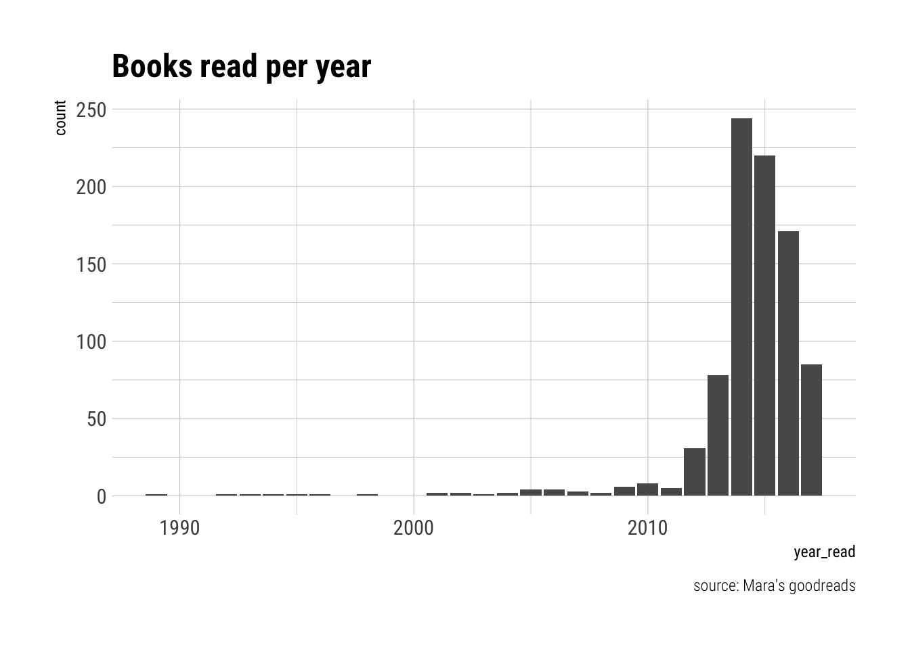
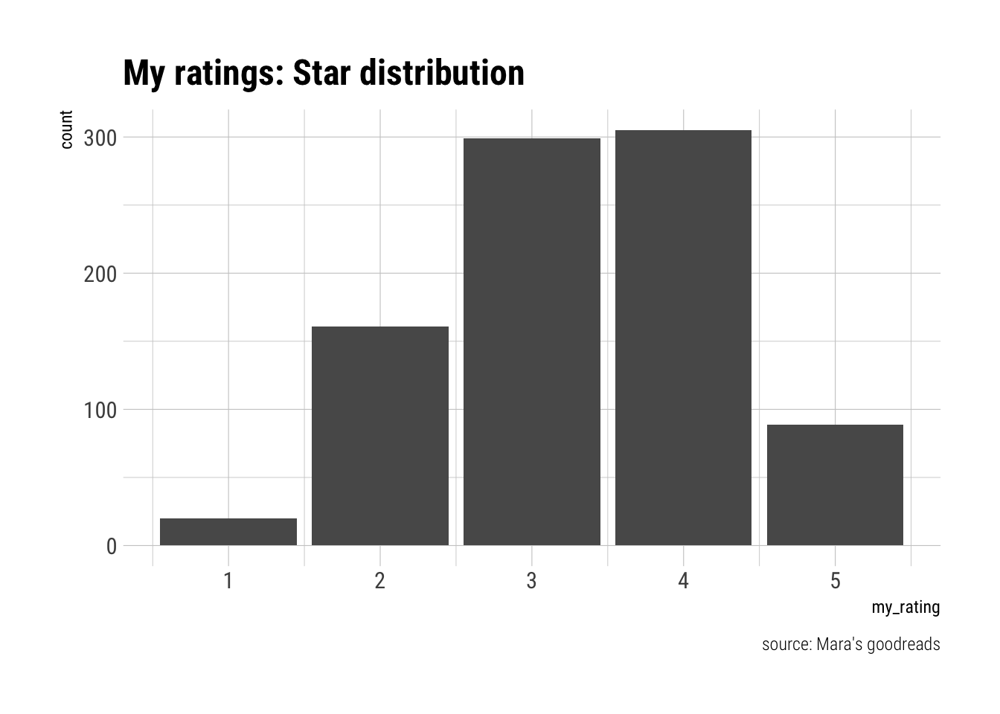

🤓 What is “normal” reading?
There are very few things considered “normal” (in the “ordinary” sense of the word) about my reading habits. Let’s just say that, when I saw #BookLoversDay was trending on Twitter, my first thought was: it me! However, it also served as a reminder of my struggles regarding reading and “normalcy” of the Gaussian distribution variety.1
My beef is not with books themselves, but rather the limitations of rating them on Goodreads using a restrictive 5-star scale. My reviews are often peppered with complaints re. “starflation,” and, at times, caveats regarding my use of an arbitrary, author-adjusted marks.
Like, I literally declare my use of an author-adjusted ⭐️ system… Which, I guess, makes me bad aggregate data… https://t.co/Cn9gfeVqGl pic.twitter.com/GhtOYQZlzw
— Mara Averick (@dataandme) August 9, 2017
Goodreads × R
First, I’ll be taking the rgoodreads package by Sagun Pai for a spin, which requires devtools for installation.
As described in the docs:
Rgoodreads - an R package for the Goodreads API
This R package acts as a wrapper for the read-only features of the Goodreads API with the ability to retrieve information on books, authors, users, reviews, etc. so that they can be analyzed in R.
# install.packages("devtools")
# devtools::install_github("famguy/rgoodreads")
library(rgoodreads)In order to actually do anything with this package, you’ll need to get an API key for Goodreads set up (as detailed in Saguan Pai’s Getting Started section).
Once you’ve done that, you can set it up as an environmental variable, either by way of your .Rprofile or or .Renviron files.2 You can load your API 🔑 by running:
Sys.setenv(GOODREADS_KEY = "YOUR_KEY_HERE")Getting data with the rgoodreads 📦
library(httr)
library(tidyverse)
library(hrbrthemes) # make things prettyYou can use the user() function to get data about that user. If you are a Goodreads user and want to use your own user id, it is the number found in the url to your profile (e.g. https://www.goodreads.com/user/show/1923002-mara).
it_me <- user("1923002")
glimpse(it_me)## Observations: 1
## Variables: 20
## $ id <chr> "1923002"
## $ name <chr> "Mara"
## $ user_name <chr> "batpigandme"
## $ link <chr> "https://www.goodreads.com/user/show/1923002-m...
## $ image_url <chr> "https://images.gr-assets.com/users/1372346616...
## $ small_image_url <chr> "https://images.gr-assets.com/users/1372346616...
## $ about <chr> "Getting in on the whole BookLikes thing: <a t...
## $ age <chr> ""
## $ gender <chr> ""
## $ location <chr> ""
## $ website <chr> "http://batpigandme.com"
## $ joined <chr> "01/2009"
## $ last_active <chr> "08/2017"
## $ interests <chr> ""
## $ updates_rss_url <chr> "https://www.goodreads.com/user/updates_rss/19...
## $ reviews_rss_url <chr> "https://www.goodreads.com/review/list_rss/192...
## $ friends_count <chr> "273"
## $ groups_count <chr> "3"
## $ reviews_count <chr> "1778"
## $ updates <chr> "wants to read <a only_path=\"false\" href=\"h...Though you can get the proper urls for things such as user updates or reviews, this isn’t terribly helpful unto itself. Unfortunately, the Goodreads API limits the types of information you can retrieve for a user to reviews and/or updates. Since I don’t always review the books I read, some will be missing.3
Your own Goodreads data
Luckily, you can export your books from Goodreads on their import/export page. So, for now, I’ll be doing that.
I’ve stashed my data in a GitHub repo, so I’ll be reading it in directly from there with readr.
my_books <- read_csv("https://raw.githubusercontent.com/batpigandme/goodreadin/master/data/goodreads_library_export.csv")
glimpse(my_books)## Observations: 1,772
## Variables: 31
## $ Book Id <int> 149572, 18753581, 24875398, 16361, ...
## $ Title <chr> "The Odessa File", "An Illustrated ...
## $ Author <chr> "Frederick Forsyth", "Ali Almossawi...
## $ Author l-f <chr> "Forsyth, Frederick", "Almossawi, A...
## $ Additional Authors <chr> NA, "Alejandro Giraldo", NA, NA, NA...
## $ ISBN <chr> "=\"0553271989\"", "=\"\"", "=\"039...
## $ ISBN13 <chr> "=\"9780553271980\"", "=\"978098993...
## $ My Rating <int> 0, 4, 4, 3, 0, 0, 5, 5, 0, 4, 2, 5,...
## $ Average Rating <dbl> 4.10, 3.76, 3.99, 3.85, 4.23, 3.32,...
## $ Publisher <chr> "Bantam", "Ali Almossawi", "G.P. Pu...
## $ Binding <chr> "Paperback", "Hardcover", "Hardcove...
## $ Number of Pages <int> 334, 64, 352, 400, 301, 192, 256, 2...
## $ Year Published <int> 1983, 2013, 2015, 2001, 2017, 2010,...
## $ Original Publication Year <int> 1972, 2013, 2015, 1925, 2017, 2010,...
## $ Date Read <date> NA, 2017-08-09, 2017-08-06, 2017-0...
## $ Date Added <date> 2017-08-09, 2017-08-09, 2017-08-05...
## $ Bookshelves <chr> "currently-reading, 2017-reads, lib...
## $ Bookshelves with positions <chr> "currently-reading (#4), 2017-reads...
## $ Exclusive Shelf <chr> "currently-reading", "read", "read"...
## $ My Review <chr> NA, NA, NA, NA, NA, NA, NA, NA, NA,...
## $ Spoiler <chr> NA, NA, NA, NA, NA, NA, NA, NA, NA,...
## $ Private Notes <chr> NA, NA, NA, NA, NA, NA, NA, NA, NA,...
## $ Read Count <int> 0, 1, 1, 1, 0, 0, 1, 1, 0, 1, 1, 1,...
## $ Recommended For <chr> NA, NA, NA, NA, NA, NA, NA, NA, NA,...
## $ Recommended By <chr> NA, NA, NA, NA, NA, NA, NA, NA, NA,...
## $ Owned Copies <int> 0, 0, 0, 0, 0, 0, 0, 0, 0, 0, 0, 0,...
## $ Original Purchase Date <chr> NA, NA, NA, NA, NA, NA, NA, NA, NA,...
## $ Original Purchase Location <chr> NA, NA, NA, NA, NA, NA, NA, NA, NA,...
## $ Condition <chr> NA, NA, NA, NA, NA, NA, NA, NA, NA,...
## $ Condition Description <chr> NA, NA, NA, NA, NA, NA, NA, NA, NA,...
## $ BCID <chr> NA, NA, NA, NA, NA, NA, NA, NA, NA,...Since I like my variable names to be in snakecase, I’ll use the snakecase package to generate new column names.
# devtools::install_github("Tazinho/snakecase")
library(snakecase)
orig_colnames <- colnames(my_books) # get original colnames
new_colnames <- to_any_case(orig_colnames, case = "snake", preprocess = ":|\\.")
colnames(my_books) <- new_colnames # assign new colnames
colnames(my_books) # check to make sure it worked## [1] "book_id" "title"
## [3] "author" "author_l_-_f"
## [5] "additional_authors" "isbn"
## [7] "isbn_13" "my_rating"
## [9] "average_rating" "publisher"
## [11] "binding" "number_of_pages"
## [13] "year_published" "original_publication_year"
## [15] "date_read" "date_added"
## [17] "bookshelves" "bookshelves_with_positions"
## [19] "exclusive_shelf" "my_review"
## [21] "spoiler" "private_notes"
## [23] "read_count" "recommended_for"
## [25] "recommended_by" "owned_copies"
## [27] "original_purchase_date" "original_purchase_location"
## [29] "condition" "condition_description"
## [31] "bcid"As it so happens, I don’t really care about most of this data. You can tell from the glimpse() output that there are several variables that, if they ever had values, would be numeric. There’s also some funky stuff going on with the isbn values from the exported csv.
Since rgoodreads gives you the ability to lookup books by book_id, the book-related data can be easily retrieved on-demand. There are also a bunch of variables that I almost never fill out (e.g. original_purchase_date, condition, etc.)– so, I can whittle things down considerably.
I’ll make a vector of the columns I consider “keepers.”
keeper_cols <- c("book_id", "title", "author", "my_rating", "number_of_pages",
"original_publication_year", "date_read", "date_added", "bookshelves")Now I can use dplyr::select to make a leaner data frame.4
books_myvars <- my_books %>%
select(one_of(keeper_cols))Because I just want to look at books I’ve read, now I’ll filter the observations, restricting them to books with values for date_read.
read_books <- books_myvars %>%
filter(!is.na(date_read))Now I’ll make use of lubridate 🗓, which has helper functions for this scenario.
library(lubridate)
read_books <- read_books %>%
mutate(date_read = ymd(date_read)) %>%
mutate(year_read = year(date_read)) %>%
arrange(desc(date_read))📚 read per year
Let’s look quickly at the number of books read by year. I’m using one of the styles from Bob Rudis’ hrbrthemes 📦, which I highly recommend checking out.
read_books %>%
ggplot(aes(year_read)) +
geom_bar(stat = "count") +
labs(title = "Books read per year",
caption = "source: Mara's goodreads") +
hrbrthemes::theme_ipsum_rc()
Though I can safely say I read more now than I did circa 1989,5 I didn’t join Goodreads until 2009 (according to my user data), and wasn’t much of an “active user” until 2012 or so. So, lets look at just the past few years.
read_books %>%
filter(year_read >= 2012) %>%
ggplot(aes(year_read)) +
geom_bar(stat = "count") +
labs(title = "Books read per year: 2012 - 2017",
caption = "source: Mara's goodreads") +
theme_ipsum_rc()
⭐️ rating distribution
read_books %>%
filter(my_rating >= 1) %>%
ggplot(aes(my_rating)) +
geom_bar(stat = "count") +
labs(title = "My ratings: Star distribution",
caption = "source: Mara's goodreads") +
theme_ipsum_rc()
It’s not quite as bad as I’d feared 🙀. But, in the next part, we’ll take a closer look at whether or not my quest for (faux) reading-normalcy has been a success. **Update:*
- Or not, but there’s some other fun stuff in there: ‘Goodreads 👍📚 Part 2: rvesting descriptions’
Yes, I know that a 5-point Likert scale is an ordinal variable and, thus, cannot be normally distributed (after all, it’s not continuous), but that doesn’t make me yearn for it any less.↩
Check out the
.Rprofilefile and.Renvironfile sections of Colin Gillespie & Robin Lovelace’s book, Efficient R programming, free online.↩If I was going to use this data, I’d also want to do quite a bit of cleaning with data types etc. See? This is why
readris so glorious.↩This isn’t actually a term, like tidy, or whatever; I just feel like using it.↩
I mean, I could’ve been a 5-year-old bibliophile, for all you know 🤷!↩